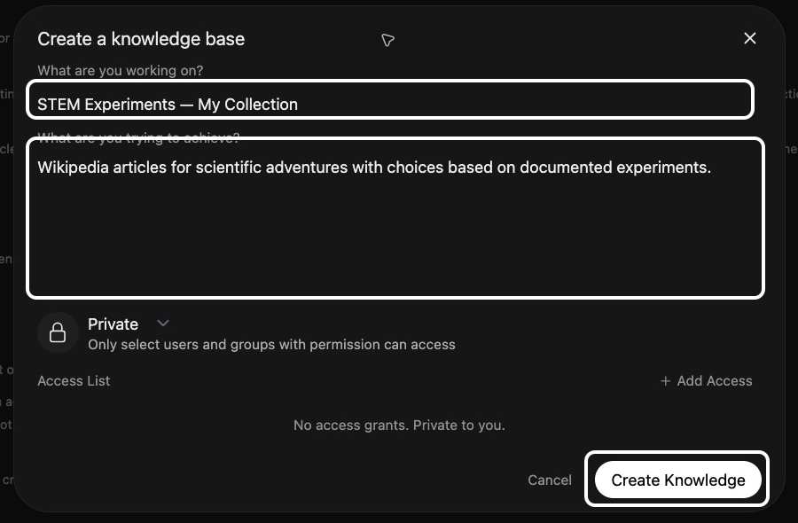
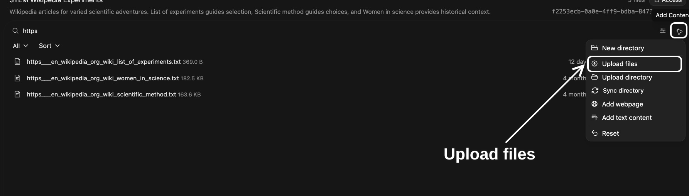
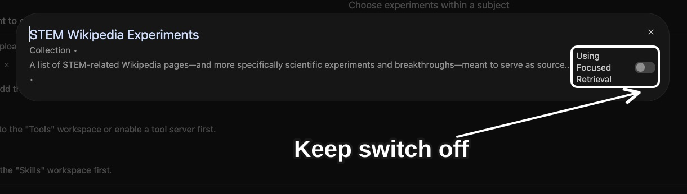
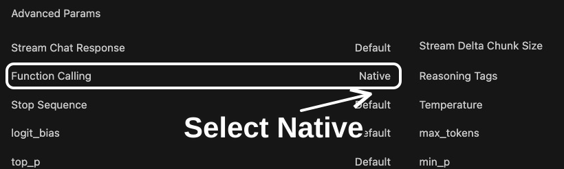
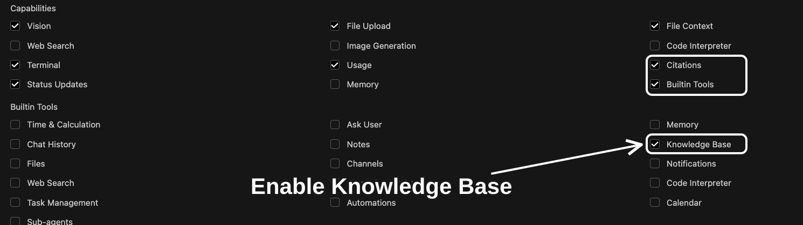

Teaching
STEM Adventure Games
Explore scientific experiments through a text adventure with numbered choices.

Alt text: CUNY AI Lab
Led by Zach Muhlbauer
New Media Lab · Room 7388.01
CUNY Graduate Center

Alt text: Workspace Models filtered to STEM Adventure Games, with white annotations identifying Workspace in left sidebar and Clone for original model.
Select Workspace in left sidebar, then Models. Search for your chosen example. Open ⋯ beside it and select Clone.

Alt text: STEM Adventure Games clone form with white annotations identifying its name, model ID, and base model.
Give your copy a unique name and model ID. Review Base Model and System Prompt. Keep base model unchanged. Leave custom Skills and Tools unselected.
Scroll to bottom and select Save & Create.

Alt text: Knowledge collection creation form with annotations identifying name, description, and Create Knowledge.
Select Workspace → Knowledge → Create. Name your collection and describe its purpose.
Keep access Private and select Create Knowledge.

Alt text: STEM Wikipedia Experiments with Add Content open and Upload files annotated.
Select Add Content → Upload files. Upload your documents and wait for processing to finish.
PDFs, Markdown, and plain text are supported.

Alt text: STEM Wikipedia Experiments filtered to its three original Wikipedia files, with List of experiments, Women in science, and Scientific method annotated.
Open each document. Check that selected text, source links, and headings are present.
For STEM Adventure Games, check passages about your chosen experiment. For Compare Wikipedia Edits, check that revision IDs match each version.

Alt text: Model editor with white annotations identifying Select Knowledge and an attached collection.
Open your copy in Workspace → Models. Under Knowledge, select your collection.
Keep only collections you want your copy to use. Cloning a model keeps links to shared documents, so edit documents in your own collection.

Alt text: Attached STEM Wikipedia Experiments collection showing Using Focused Retrieval with its switch off, outlined and marked by an arrow.
Click your attached collection. Leave its switch off so it reads Using Focused Retrieval.
This mode retrieves relevant passages for your request.

Alt text: Advanced Params with Function Calling set to Native, outlined and marked by an arrow.
Open Advanced Params and set Function Calling to Native.
This allows your model to use built-in Knowledge tools to search and read documents.

Alt text: Model settings with Citations and Builtin Tools checked under Capabilities, and Knowledge Base checked under Builtin Tools. White outlines identify these settings.
Under Capabilities, enable Builtin Tools and Citations. Under Builtin Tools, enable Knowledge Base.
These tools are included in Open WebUI.

Alt text: STEM Adventure Games chat showing four experiment choices and an annotated model selector.
Start a new chat. Select model ID on bottom right of message box. Choose your copy.
Ask STEM Adventure Games for four new adventures. Choose one, then ask “Which passage supports this scene? Quote it and cite your source.”
For Compare Wikipedia Edits, ask “Use saved revisions in my attached collection. Compare one change and quote both passages.”

Alt text: Wikipedia source passage opened from a STEM Adventure Games citation, with its document name and supporting text annotated.
Select a citation to inspect its source.
Choose another experiment or article. Refresh source documents when needed and check responses against versions you saved.